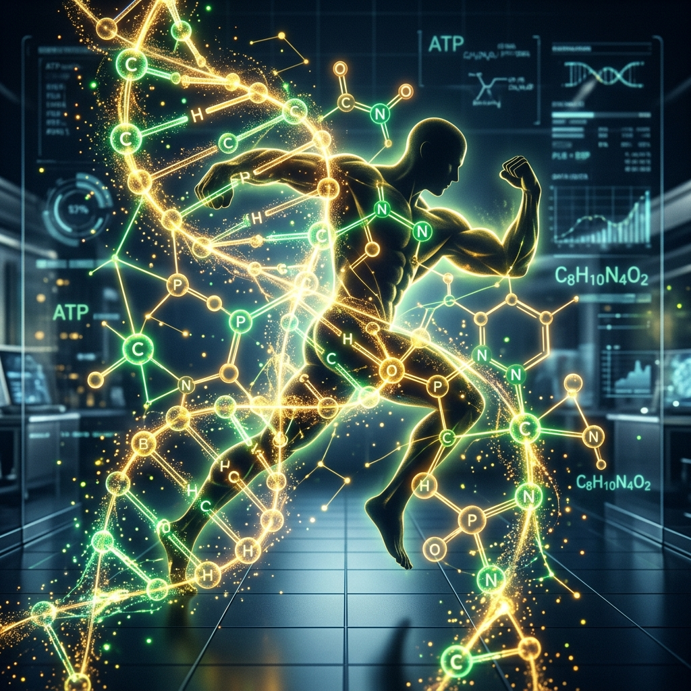

If you've spent more than five minutes in a gym locker room, on fitness TikTok, or reading health forums recently, you’ve probably heard the whispers. It sounds almost mythical: a microscopic compound that can magically melt fat and build muscle while you sleep. People are trading stories about rapid transformations, increased endurance, and the sudden disappearance of stubborn belly fat.
While the reality isn't exactly "magic," the science behind peptides for weight loss and peptides for muscle growth is genuinely fascinating. It represents a paradigm shift in how we approach metabolic health and physical optimization.
Let’s strip away the bro-science, set aside the exaggerated marketing claims, and look at what the medical literature actually says about these molecular messengers.
We all want the shortcut. It is human nature to want to eat an entire pizza while watching Netflix and still wake up looking like a Greek deity. Unsurprisingly, biology doesn’t work like that. The human body is an incredibly complex, highly conservative system designed to store energy (fat) for times of famine. It does not want to give up those energy stores easily.
But what biology does do is respond to specific signals.
Peptides are exactly that: signaling molecules. They are short chains of amino acids that tell your body to perform specific functions. If proteins are the heavy machinery of the body, peptides are the foremen shouting instructions on the factory floor. Some tell your skin to make more collagen, while others tell your pituitary gland, "Hey, it’s time to release some growth hormone!"
When we talk about body composition, the conversation generally splits into two massive categories: burning fat and building muscle. And while they often go hand in hand, the peptides used to achieve these goals work in very different ways.
When researching peptides for weight loss, the most prominent class of compounds today are GLP-1 receptor agonists. These have dominated headlines globally and have revolutionized the medical approach to weight management and obesity.
GLP-1 (Glucagon-like peptide-1) is a naturally occurring hormone in your gastrointestinal tract. It is released in response to food intake. Pharmaceutical scientists figured out how to create synthetic versions of this peptide (like semaglutide and tirzepatide) that last much longer in the body than the natural version.
These are not the jitter-inducing "fat burners" of the 1990s. They don't make your heart race or cause you to sweat profusely while sitting on the couch. Instead, they act as highly sophisticated metabolic managers.
As noted in leading obesity research journals: "GLP-1 receptor agonists influence energy balance primarily through the central regulation of appetite, leading to significant reductions in caloric intake and sustained body weight reduction."
In plain English, these peptides for weight loss work primarily via three mechanisms:
You aren't starving yourself through sheer willpower; your biological signals are just being optimized so that maintaining a caloric deficit feels natural rather than torturous.
There is a catch to rapid weight loss. When the body loses weight quickly, it doesn't just burn fat; it also burns muscle. This is a significant concern in the medical community. If you lose 30 pounds on a GLP-1 receptor agonist, but 10 of those pounds are lean muscle mass, your basal metabolic rate will drop, making it harder to maintain the weight loss long-term.
This is why doctors strongly emphasize that peptides for weight loss must be paired with adequate protein intake and resistance training. You have to give your body a reason to keep the muscle.
This brings us to the other side of the coin: peptides for muscle growth.
If GLP-1s are the metabolic managers, growth hormone secretagogues are the builders. "Secretagogue" is just a fancy scientific term that means "a substance that causes another substance to be secreted."
For decades, bodybuilders injected synthetic human growth hormone (HGH) to build massive amounts of muscle. However, exogenous HGH shuts down the body's natural production, causes a host of terrible side effects (including organ growth), and is highly illegal without a prescription.
Peptide secretagogues (like CJC-1295, Ipamorelin, or Tesamorelin) take a much safer, more natural approach. Instead of flooding the body with synthetic hormones, these peptides simply tap your pituitary gland on the shoulder and encourage it to produce its own natural, pulsatile release of growth hormone.
Medical literature states: "Administration of growth hormone-releasing peptides demonstrates a potent capability to stimulate endogenous GH secretion, thereby supporting an anabolic environment conducive to muscle protein synthesis and lipolysis."
Translation: They help create an environment in your body where building muscle and breaking down fat (lipolysis) is much easier.
While they are highly sought after as peptides for muscle growth, the benefits of increased natural growth hormone extend far beyond bigger biceps. Researchers have noted improvements in:
However, just like the weight loss peptides, these are not magic. They will not build muscle if you are sitting on the couch playing video games. You still have to lift the heavy things. You still have to cause micro-tears in the muscle fibers. The peptide just ensures your body maximizes the recovery and growth from that effort.
It is crucial to draw a hard line between FDA-approved therapies and experimental research chemicals.
Many peptides for weight loss, specifically GLP-1 receptor agonists, have undergone rigorous, multi-year clinical trials and are FDA-approved for human use. They have a documented safety profile, clear dosage guidelines, and are prescribed by licensed medical professionals.
Conversely, many peptides for muscle growth (the secretagogues) are not FDA-approved for human consumption. They are legally sold as "research chemicals" strictly for laboratory use. While they have shown incredible promise in clinical literature, using them without medical supervision carries risks, including improper dosing, contamination from unverified suppliers, and unintended side effects.
If you are considering integrating any peptide therapy into your routine, the first step should always be a conversation with an endocrinologist or a specialized medical provider.
We are living in a golden age of metabolic science. Whether you are researching peptides for weight loss to understand metabolic regulation, or exploring peptides for muscle growth to optimize physical performance and recovery, the key is understanding that these are tools, not miracles.
They signal the biological pathways, but you still have to walk the path. They can make the journey significantly easier and more efficient, but the foundation of health will always be diet, exercise, and recovery.
Now, if you'll excuse me, I need to go lift something heavy so my secretagogues have something to do.